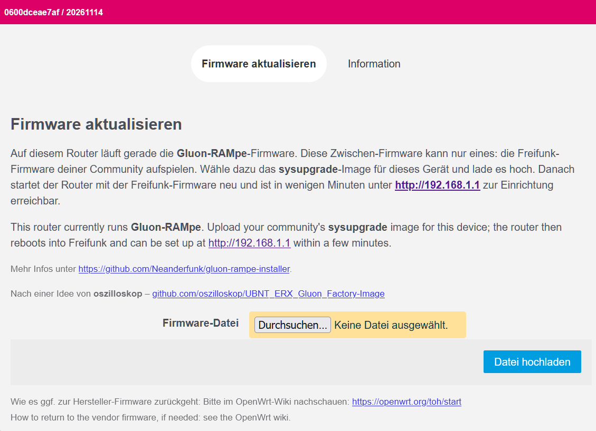

ZyXEL WSM20 (Multy M1): Freifunk-Firmware installieren

Schreib uns, ob es geklappt hat. Und wenn es irgendwo hakt: Melde dich,
wir helfen dir weiter. Jede Rückmeldung macht die
Anleitung für alle nach dir besser:
projekt@neanderfunk.de
Die Firmware von Zyxel hat eine versteckte Seite, über die sich eine andere
Firmware hochladen lässt. Darüber kommt zuerst die Gluon-RAMpe in den Arbeitsspeicher: eine kleine
Firmware, die nur eins kann, die Freifunk-Firmware deiner Community
annehmen. Du
brauchst nur einen Browser, aber etwas Geduld: Die versteckte Seite ist
manchmal zickig.
Ein Konto in der Zyxel-Cloud brauchst du dafür nicht.
Was du brauchst
- den Multy M1 mit Netzteil, einen Rechner mit Netzwerkanschluss und ein
Netzwerkkabel
- die RAMpe für den WSM20 (nur für den Arbeitsspeicher):
gluon-rampe-20261115-zyxel-wsm20-initramfs-kernel.bin
- die Freifunk-Firmware deiner Community für dieses Gerät, und zwar das
sysupgrade-Image
Schritte
Teil 1: Die RAMpe in den Arbeitsspeicher
-
Verbinden. Steck das Kabel vom Rechner in die Buchse LAN1 des
WSM20. Kein Internet-Anschluss, nur der Rechner. Der Rechner holt sich
seine Adresse automatisch.
-
Einschalten und auf die LED achten. Strom an. Die LED leuchtet erst
türkis, blinkt dann türkis und schließlich grün, jeweils etwa zweimal pro
Sekunde. Dann ist das Gerät bereit.
Leuchtet sie stattdessen dauerhaft rot, war das Gerät schon
eingerichtet und meldet nur, dass es kein Internet hat. Dann erst auf
Werkseinstellungen zurücksetzen: im laufenden Betrieb die Reset-Taste
hinten etwa 5 Sekunden drücken, bis die LED die Farbe wechselt (gelb) und
blinkt. Nach dem Neustart kommt die Folge türkis, türkis blinkend, grün
blinkend.
-
Die versteckte Seite öffnen. Im Browser:
http://192.168.212.1/gui/#/main/debug/firmwareupgrade
Geduld: Anfangs ist die Seite oft ausgegraut, manchmal mit einer
Ladeanimation. Nach 1 bis 2 Minuten lässt sich "Upload File" anklicken.
Landest du stattdessen auf der Einrichtungsseite von Zyxel: zurück
springen oder die Adresse in einem neuen Tab öffnen, bis die Upgrade-Seite
kommt.
-
RAMpe hochladen. Die RAMpe-Datei wählen und mit "OK" bestätigen.
Die Seite zeigt erst den Fortschritt in Prozent und zählt dann 150
Sekunden herunter. Danach startet die RAMpe im Arbeitsspeicher.
Teil 2: Freifunk-Firmware
-
Die RAMpe-Seite öffnen. Öffne http://192.168.1.1. Die RAMpe
leitet von selbst auf ihre Seite "Firmware aktualisieren" weiter. Kommt
stattdessen "Not Found", hat sich der Browser eine Weiterleitung von
früher gemerkt, siehe Der Browser zeigt "Not Found".
Kommt gar nichts, siehe Die Router-Seite antwortet nicht.
Zeigt der Browser eine Warnung vor einem unsicheren Zertifikat, hat er
von sich aus https:// vor die Adresse gesetzt, siehe
Browser macht https daraus.
Die RAMpe läuft nur im Arbeitsspeicher. Startet das Gerät zwischendurch
neu oder fehlt der Strom, ist sie weg: dann noch einmal ab Schritt 2.

-
Freifunk-Firmware hochladen. Wähl das sysupgrade-Image
deiner Community aus und klick "Datei hochladen". Die RAMpe zeigt die
Prüfsumme (SHA256) der Datei. Vergleich sie mit der Prüfsumme, die deine
Community zur Datei angibt. Stimmt sie, klick "Fortfahren".

Danach erscheint der Hinweis, dass die Firmware jetzt geschrieben wird.
Jetzt den Strom nicht unterbrechen.

-
Warten, etwa 2 Minuten, Strom nicht ziehen.
-
Fertig. Danach startet die Freifunk-Firmware deiner Community: je nach
Community zuerst mit einer Einrichtungsseite unter http://192.168.1.1
(die LED blinkt dann langsam weiß) oder gleich im Betrieb.
Antwortet dort nichts, siehe Die Router-Seite antwortet
nicht; kommt "Not Found", siehe
Der Browser zeigt "Not Found".
Woran du erkennst, dass es geklappt hat
- Nach Teil 1 zeigt
http://192.168.1.1 die RAMpe-Seite "Firmware
aktualisieren".
- Nach Teil 2 meldet sich die Freifunk-Firmware.
Wenn etwas schiefgeht
- Die Upgrade-Seite bleibt ausgegraut. 1 bis 2 Minuten warten; das ist
normal.
- Der Browser springt auf die Einrichtungsseite von Zyxel. Zurück
springen oder die Adresse in einem neuen Tab öffnen.
- Die LED leuchtet dauerhaft rot. Werkseinstellungen wie in Schritt 2.
Anderer Weg: über OpenWrt
Statt der RAMpe nimmt die versteckte Seite in Schritt 4 auch OpenWrt für den
Arbeitsspeicher:
openwrt-24.10.8-ramips-mt7621-zyxel_wsm20-initramfs-kernel.bin. Danach unter
http://192.168.1.1 bei "Login" klicken (ein Passwort gibt es noch nicht),
System → Backup / Flash Firmware, ganz unten "Flash image…", das
sysupgrade-Image wählen, "Upload", den Haken bei "Keep settings and retain
the current configuration" entfernen und "Continue".
Quelle
Diese Anleitung folgt in weiten Teilen der
Anleitung von Freifunk Aachen
(Stefan Limbach, 2024).
Freifunk-Installationsanleitung, erzeugt aus gluon-rampe-installer.